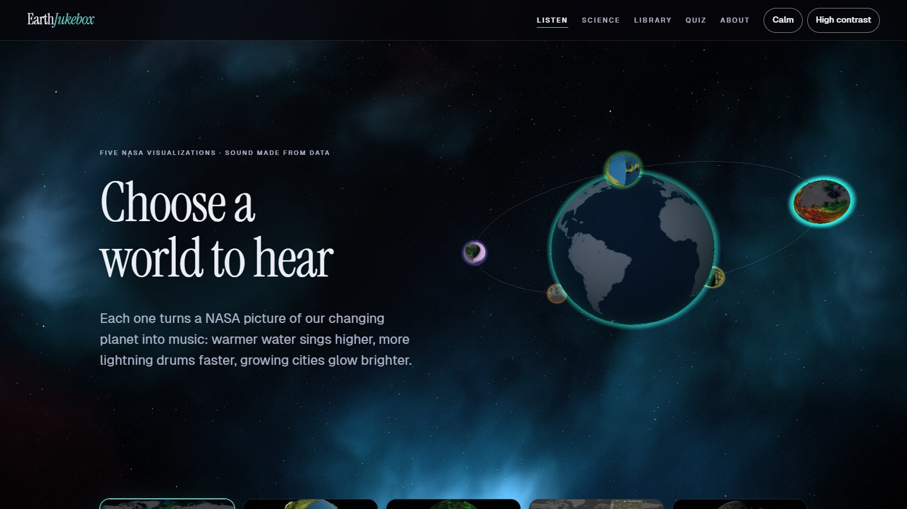
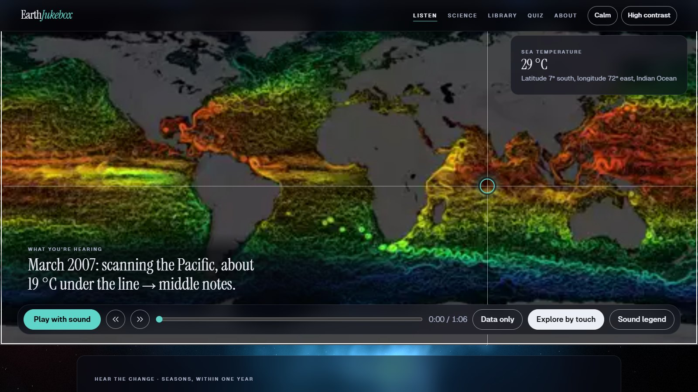
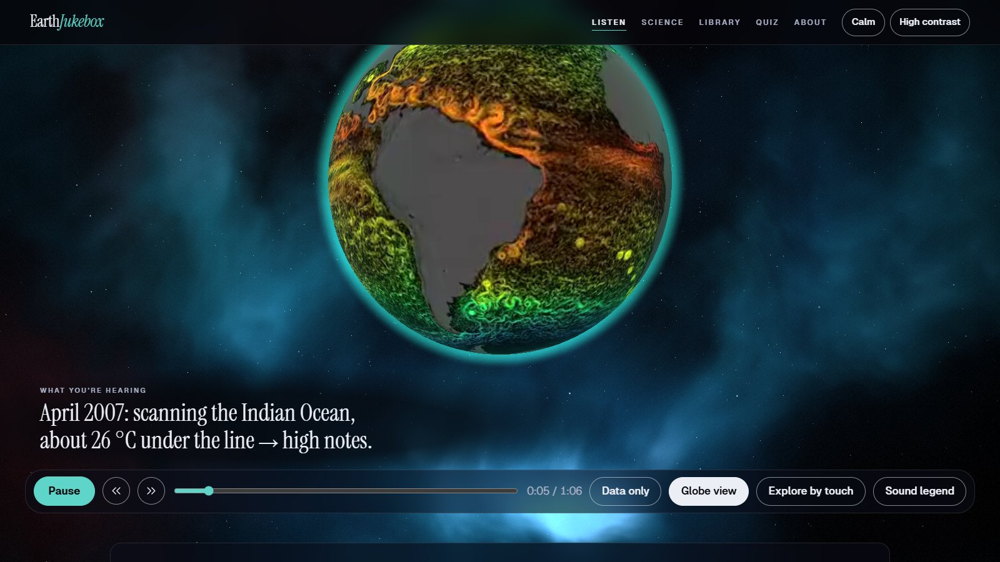
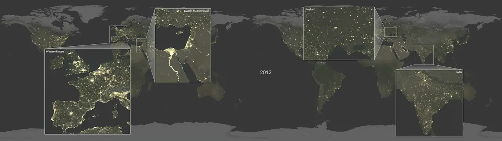
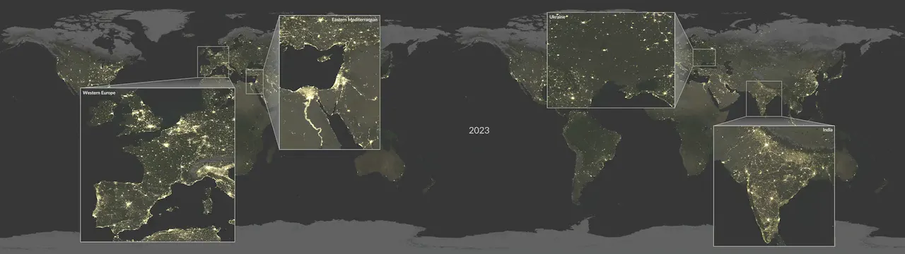
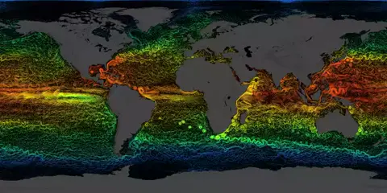
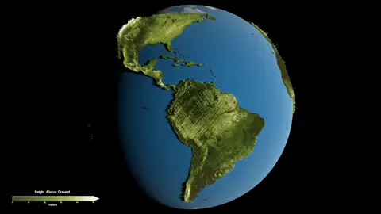
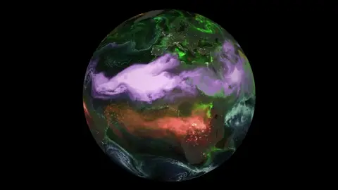
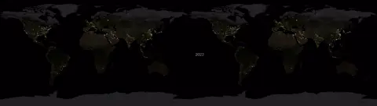
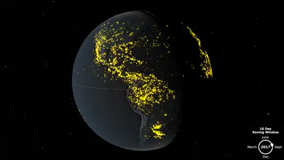

NASA Space Apps Challenge 2026
Earth
Jukebox
Hear NASA’s pictures of our changing planet.
- Team
- Earthsong
- Team member
- Nishtha Sharma
- Challenge
- Earth Jukebox
The problem
NASA’s Earth visualizations are silent pictures.
people live with a vision impairment. For many of them, a map of warming oceans says nothing.
Source: WHO, World report on vision (2019)
We turn each visualization into music, live, so you can hear what the picture shows.
Inspired by NASA’s own sonification of Caldwell 73. We wanted to do the same for Earth, in real time.
How it works
The browser reads every frame like a scientist.
Watch
About 15 times a second, the browser samples the NASA video it is playing.
Decode
Measure
Each colour becomes a real value: °C, metres of forest, share of city light.
Play
Warmer water sings higher. More lightning drums faster. Nothing is pre-recorded.

The experience
Fly to Earth. Pick a world. Listen.

Hear the story
Five NASA visualizations become five pieces of music, with spoken captions.


20122023Hear the change
City lights in 2012, then 2023, then only the difference.
India’s lit area: 2.5 % → 11.8 %
Explore by touch
Move a crosshair with a finger or the arrow keys and hear the value under it.
29 °C, 7° south, 72° east, Indian Ocean
Blind and low-vision listeners first: full keyboard and screen-reader support, high-contrast and Calm modes, a photosensitivity warning, and downloadable MP3s with transcripts for classrooms.
Is it real? We measured it.
The sound follows the data, not the mood.
Median correlation between the music we play and the data at twice the resolution, across 32 data mappings.
- Every sound is labelled: tested data, approximate data or artistic choice. A mapping that scored r = 0.00 was removed.
- Values are read from NASA’s own colour bars. Tropical water reads 27–29 °C, the Southern Ocean 4–7 °C.
- A “close your eyes” quiz lets anyone test whether they can hear hotter, taller or brighter.
- Accessibility 100 in Lighthouse on all five pages, and 0 axe violations (WCAG 2.1 AA).
Made possible by NASA open data
Five visualizations from NASA’s Scientific Visualization Studio.





All five come from the Earth Information Center collection. The sound design follows NASA’s Caldwell 73 sonification (SVS 13786): a radar-like sweep, position mapped to pitch, colour mapped to instrument. Credits are on every page. NASA does not endorse this project.
What’s next
Any NASA visualization with a colour bar
can sing.
Museums
A listening station beside the Earth Information Center’s hyperwall, so every visitor can hear the planet.
Classrooms
Free, with no accounts and no installs. Ready-made MP3s and transcripts for teachers and blind students.
More data
A new visualization needs one config file and no new engine code. Next: sea level, CO₂ and wildfires.
711nishtha.github.io/earthsong-jukebox
Team Earthsong · Nishtha Sharma
Close your eyes. Listen to the planet.